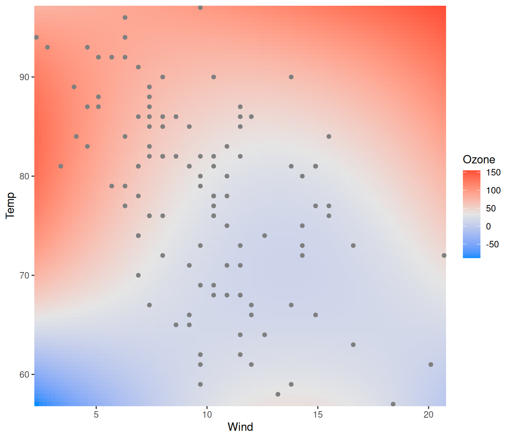
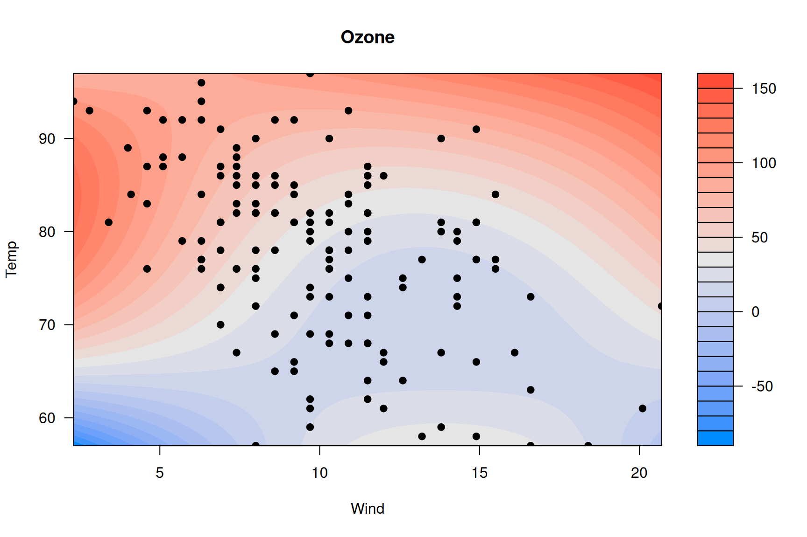
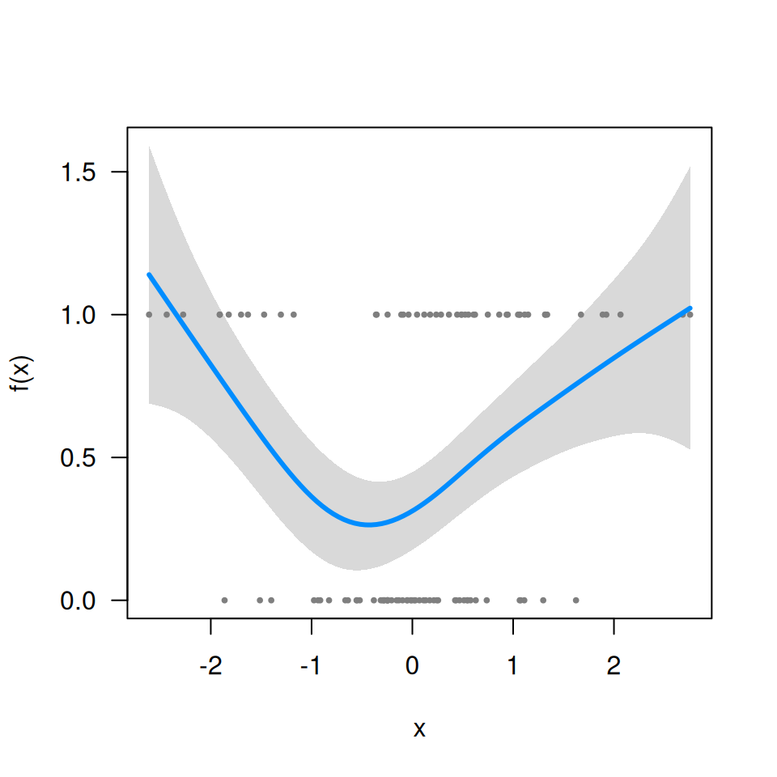
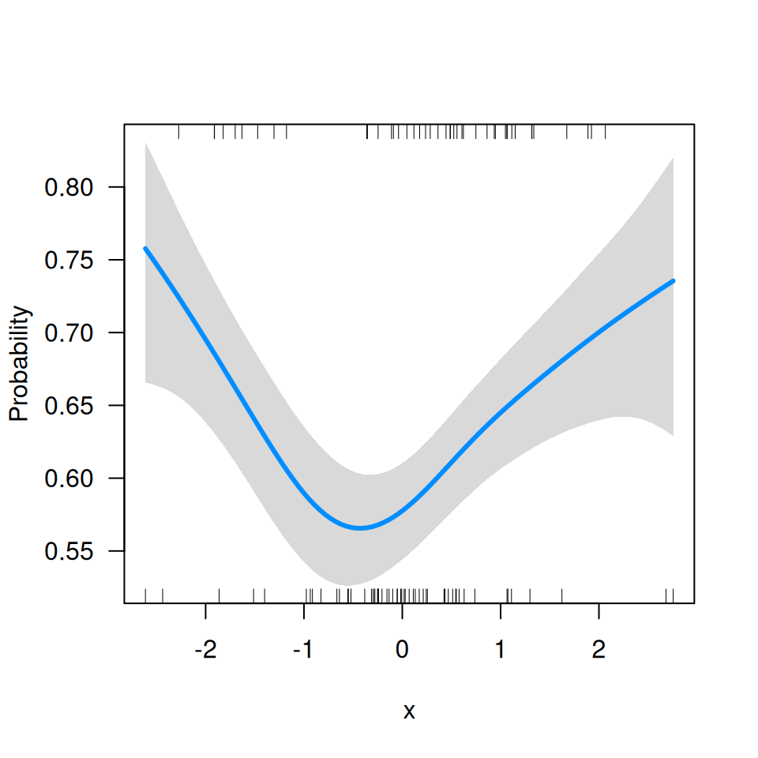
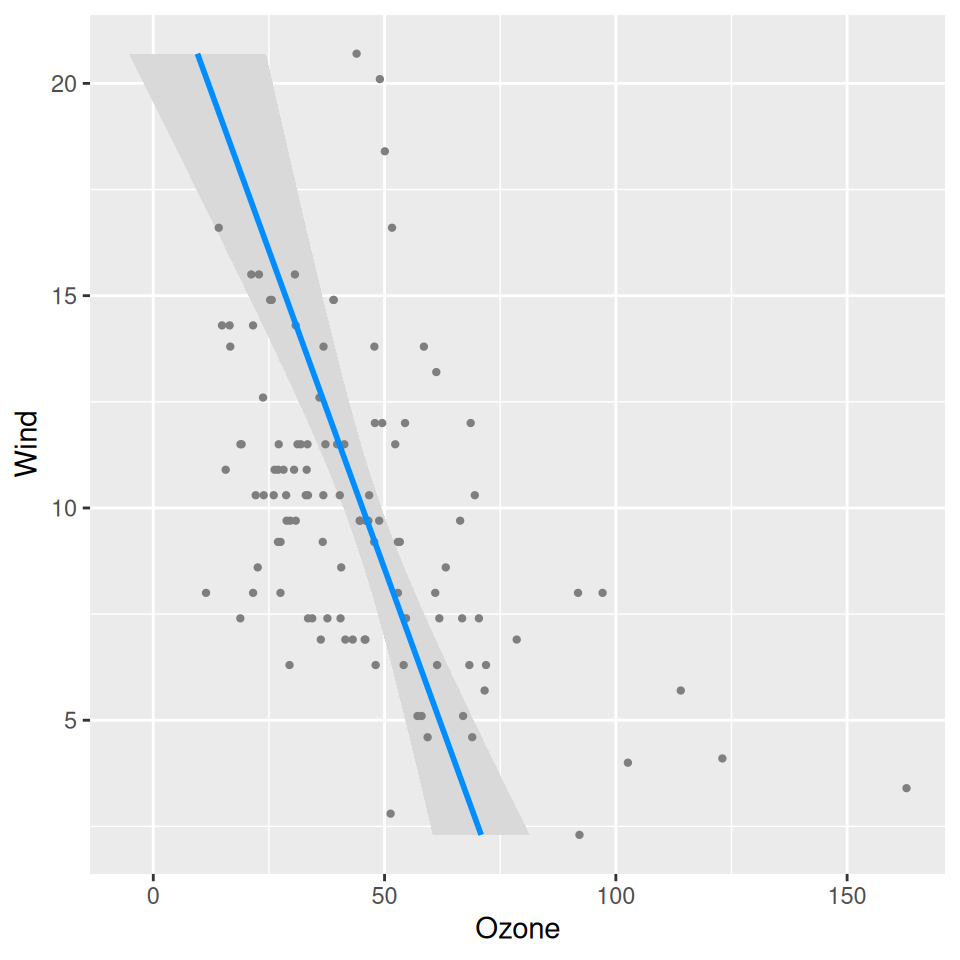

This page contains miscellaneous questions that I have been asked about visreg, with answers posted here so that others can read them too.
Q: In visreg2d, is it possible to superimpose data
points onto the plot?
Yes; it’s probably easiest to do this using ggplot2 to
render the surface:
fit <- lm(Ozone ~ Solar.R + Wind + Temp + I(Wind^2) + I(Temp^2) + I(Wind*Temp)+I(Wind*Temp^2) +
I(Temp*Wind^2) + I(Temp^2*Wind^2), data=airquality)
visreg2d(fit, x="Wind", y="Temp", plot.type="gg") +
geom_point(aes(Wind, Temp), data=subset(airquality, !is.na(Ozone)), col='gray50')
You can do it with base R graphics too, but it’s kind of complicated
because of how filled.contour() works and the way in which
it actually creates two plots, one main plot and one plot for the
legend:
p <- quote({
axis(1, at = mx, labels = lx)
axis(2, at = my, labels = ly)
with(airquality, points(Wind, Temp, pch=19))
})
visreg2d(fit, x="Wind", y="Temp", plot.type="image", plot.axes=p)
Doing this through the axes is admittedly very weird – it’s not my
idea; see ?filled.contour.
Q: Does visreg work with gamm (mgcv) or
gamm4 objects?
Yes, although it takes a minor workaround since these objects have an
unusual structure. First, let’s simulate some data and fit a model (I’m
just using a tibble here for convenience, it isn’t relevant
to the question):
library(mgcv)
library(tibble)
n <- 20
Data <- tibble(
ID = factor(rep(LETTERS[1:n], each=5)),
x = rnorm(n*5),
lp = rnorm(n)[as.numeric(ID)] + x^2 - 1,
p = binomial()$linkinv(lp),
y = rbinom(n*5, 1, p)
)
fit <- gamm(y~s(x), data=Data, dist='binomial', random=list(ID=~1))Now, fit$gam does not include the call (i.e.,
fit$gam$call is NULL), which means
visreg won’t be able to find the data:
visreg(fit$gam, 'x')
# Error in FUN(X[[i]], ...): object 'y' not foundSo you have to include it manually:
fit$gam$data <- Data
visreg(fit$gam, 'x')
Q: I’m getting the following error message:
Error in UseMethod("family") : no applicable method for 'family' applied to an object of class XXXX.
When you specify scale='response', you’re telling
visreg to automatically find the transformation mapping the
linear predictor to the scale of the response. It can only do that if
the fitted model object provides that transformation through the
family() method. Many R models (e.g., glm) do
this, but some (e.g., the glmmADMB package,
gamm from the mgcv package) don’t. If you’re
working with one of these models, you’ll have to supply that
transformation yourself. For example, with the model from the previous
question, this code fails:
visreg(fit$gam, 'x', scale='response')
# Error in UseMethod("family"): no applicable method for 'family' applied to an object of class "gam"Since this is a binomial model with a logistic link,
binomial()$linkinv provides the inverse transformation:

Q: Can I have the response variable on the horizontal axis instead of the vertical axis?
You can achieve this via ggplot2::coord_flip:
fit <- lm(Ozone ~ Solar.R + Wind + Temp, data=airquality)
visreg(fit, "Wind", gg=TRUE) + coord_flip()